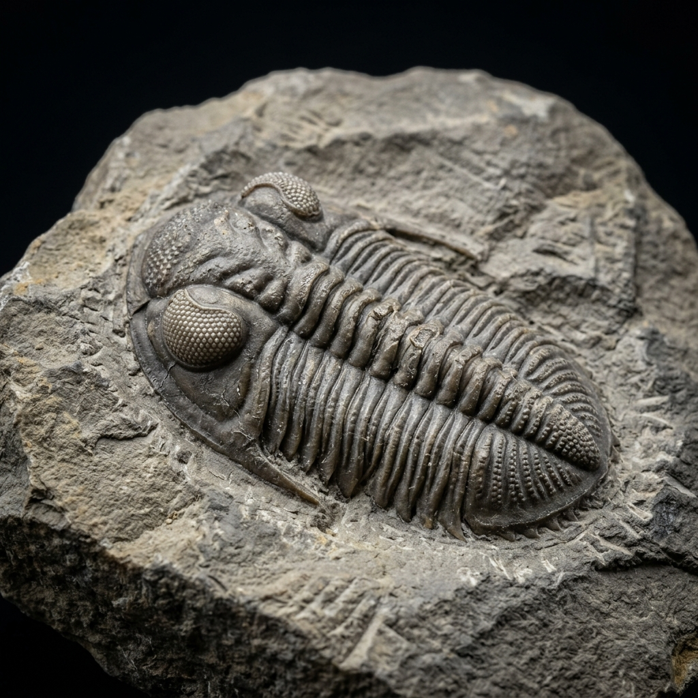
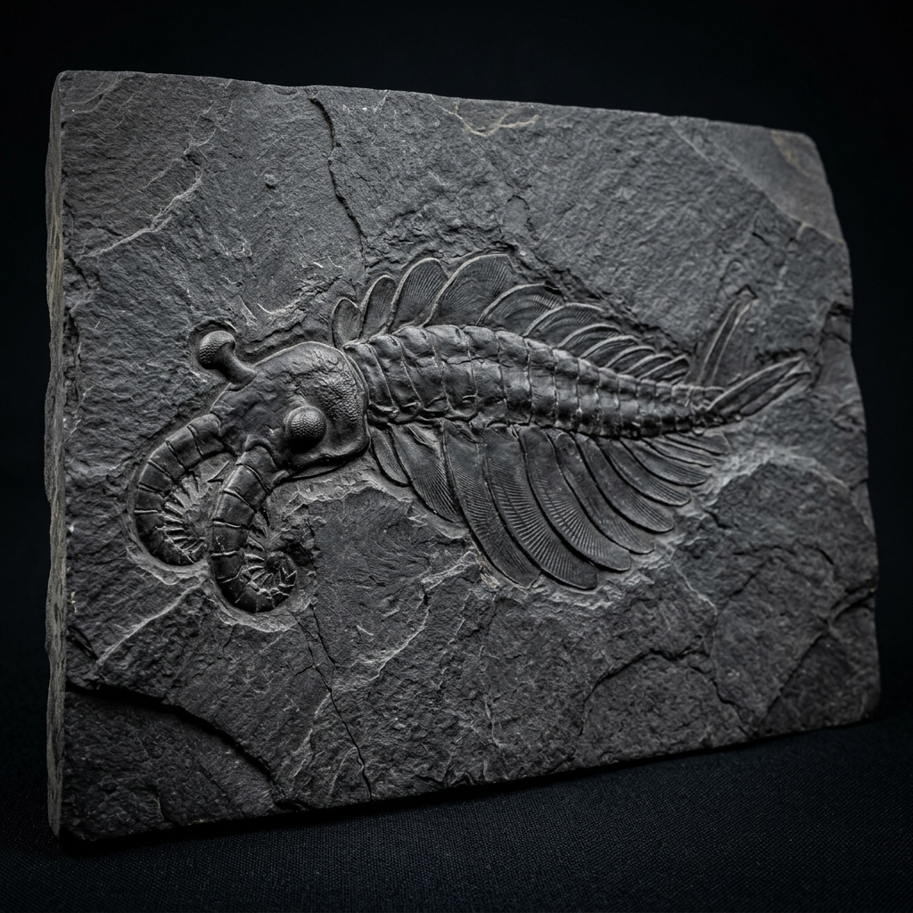

INSTITUTO ADVENTISTA
INSTITUTO ADVENTISTA
INSTITUTO ADVENTISTA
INSTITUTO ADVENTISTA
Exposiciones que presentan el diseño inteligente y la complejidad del cosmos y la vida.
Demostrar la increíble complejidad de la información biológica. Explora cómo una sola célula humana contiene suficiente información digital para llenar 1,000 libros.
Objetivo: Demostrar la increíble complejidad de la información biológica.
Manipula la estructura 3D en tiempo real. Haz clic en las bases nitrogenadas o en la espina dorsal para analizar su información.
Objetivo: Explicar cómo el universo parece estar "calibrado" con precisión para la vida humana.
Los científicos han descubierto que si las fuerzas fundamentales del universo (como la gravedad o la fuerza nuclear fuerte) cambiaran apenas una fracción infinitesimal, la vida no sería posible. Es como si alguien hubiera calibrado cada "dial" del universo exactamente donde debe estar.
Esto se conoce como "Ajuste Fino" o Fine-tuning. La probabilidad de que esto sucediera por azar es tan baja que sugiere fuertemente un diseño inteligente.
Valores Matemáticos de Calibración:
Una alteración de solo 1 parte en 1060 habría impedido que las galaxias o estrellas se formaran de manera estable.
Rige el ritmo de expansión espacial. Su nivel de sintonización y calibración es de una precisión matemática de 1 en 10120.
Calibra la cohesión de los átomos. Un valor de 0.006 haría imposible formar elementos pesados; 0.008 fusionaría todo el hidrógeno en el Big Bang.
Objetivo: Analizar cómo los sistemas biológicos complejos y el registro fósil desafían las explicaciones puramente naturalistas.
Muchos sistemas biológicos (como el flagelo bacteriano o el ojo humano) son como una ratonera: no funcionan a menos que todas sus partes estén presentes y en el lugar exacto. No pueden evolucionar gradualmente paso a paso, ya que los pasos intermedios no tendrían función. Esto sugiere que fueron diseñados completos desde el inicio.
En lugar de mostrar gradaciones infinitas, muchos de los principales grupos de animales aparecen de forma repentina y completamente formados, como en la Explosión Cámbrica.
Casos de Estudio Interactivos:

Los trilobites poseían ojos compuestos formados por lentes de calcita pura, sintonizados de manera exacta para evitar la aberración esférica (diseño de lentes doblete de Huygens-Descartes). Esta sofisticada ingeniería de visualización aparece de forma completa y funcional en el registro fósil más antiguo.
La concha del Nautilus sigue con exactitud la espiral áurea o logarítmica. A medida que el Nautilus crece, crea nuevas cámaras internas de flotación que aumentan de tamaño bajo una fórmula matemática de proporción perfecta que le permite controlar la profundidad en el mar.

En el estrato geológico del Cámbrico aparecen de forma súbita y simultánea la mayoría de los grandes filos animales complejos, completamente equipados con caparazones, ojos compuestos, patas y sistemas digestivos, contradiciendo el gradualismo darwiniano.